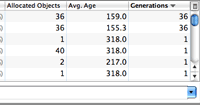

デバッガとプロファイラ
アプリケーションの問題(デッドロックやメモリー・リークなど)を特定して解決できるよう、NetBeans IDEには豊富な機能を備えたデバッガとプロファイラが用意されています。
デバッガ
NetBeansデバッガでは、ソース・コード内へのブレークポイントの挿入、フィールドのウォッチの追加、コードのステップ実行、メソッドまで実行、スナップショットの取得、実行のモニター(発生の都度)などが可能です。すでに実行中のプロセスに、デバッガをアタッチすることもできます。
IDEには、GUIスナップショットを取得したり、JavaFXおよびSwingアプリケーションのGUIを視覚的に確認したりできる、ビジュアル・デバッガが付属しています。コンポーネント・プロパティとコンテナ内のコンポーネントの階層の表示や、コンポーネントのソース・コードの検索が可能です。ビジュアル・デバッガを使用すると、ソース・コード内を検索しなくても簡単にGUIアクションにリスナーを追加できます。
NetBeans IDEでのマルチスレッド・アプリケーションのデバッグNetBeans IDEでのビジュアル・デバッガの使用
プロファイラ
NetBeansプロファイラでは、アプリケーションの処理速度とメモリー使用状況を最適化するためのエキスパート向け支援を提供しています。また、信頼性とスケーラビリティに優れたJava SE、JavaFXおよびJava EEの各アプリケーションを簡単にビルドできます。
CPUまたはメモリーの標準的なプロファイリングや単純なモニタリングなどの一般的なタスクから、任意で選択できます。オプションは、エキスパートによって事前にデフォルトの値に設定されています。設定はアプリケーションごとにカスタマイズできます。
NetBeans IDEでのJavaアプリケーションのプロファイリングの概要マルチスレッドのデバッグ |
ヒープ・ウォーカ |
世代カウント |
|
|
|
 |


{kind=link}
{kind=link}
{kind=link}
関連項目
- 最新の安定版リリースの個別機能のリストについては、NetBeans IDE 8.1リリース・ページを参照してください。
- 作業を開始する際に役立つチュートリアルについては、「一般的なJava開発の学習」を参照してください。